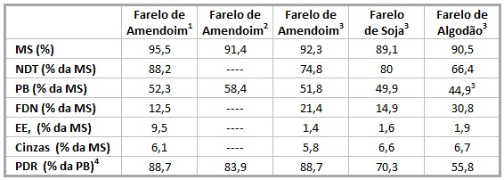

Moedas
Farelo de Amendoim
O Farelo de Amendoim
É obtido após a extração do óleo. Esta extração pode ser feita a frio, quente ou através de solventes, sendo o método a frio o que melhor preserva suas qualidades nutritivas.
- A Torta é obtida através da extração sem solvente.
- O Farelo é obtido através da extração com solvente.
É um alimento rico para a nutrição animal, um farelo com teor de 45% de proteínas, 8,5% de matéria graxa e no máximo 9,5% de celulose, sendo portanto riquíssimo em NDT 92% (nutrientes digestíveis totais).
Muito utilizado para gado Leiteiro e de Corte
O uso do Farelo de Amendoim na alimentação de Bovinos
A criação de bovinos a pasto encontra-se a mercê de fatores climáticos como a sazonalidade da produção de forragem, tanto na oferta quanto na qualidade da mesma. Desse modo, para trabalhar com pecuária mais intensiva e evitar a perda de peso dos animais neste período, algumas tecnologias de cunho nutricional estão disponíveis aos pecuaristas. A suplementação protéica deste período é uma delas.
Dentre tantas opções para a realização de suplementação protéica encontra-se o farelo de amendoim, cuja crescente produção, armazenamento e comercialização vêm se profissionalizando.
Valor Nutricional
O valor nutritivo do farelo de amendoim é comparável ao do farelo de soja, apresentando teores de proteína degradável no rúmem (PDR) bem maiores. Esta proteína, no rúmem, sofre ação de enzimas, fornecendo um suprimento contínuo de peptídeos, aminoácidos e amônia essenciais para a incorporação e crescimento dos microrganismos e conseqüente síntese desta proteína microbiana, sendo a principal fonte de proteína metabolizável (PM) para o ruminante.
Ainda comparado ao farelo de soja e de algodão, apresenta maiores porcentagens de nutrientes digestíveis totais (NDT), matéria seca (MS), proteína bruta (PB), nitrogênio contido na fibra determinada em detergente neutro (N-FDN) e extrato etéreo (EE). Perdendo apenas nos teores de fibras, lignina, nitrogênio não protéico (NNP) e matéria mineral (MM).
No quadro abaixo está demonstrada uma comparação entre os principais teores nutricionais do farelo de amendoim, de soja e de algodão.
QUADRO 1: Comparativo da composição nutricional de farelo de amendoim, farelo de soja e farelo de algodão.
- = Laboratório de Bromatologia da ESALQ/USP (média de 3 análises).
- = Góes et al. (2004).
- = Valores da tabela do NRC (2001).
- = Calculado segundo a metodologia do NRC (2001); taxa de passagem fixada em 5,7%/h.
- = No Brasil, o farelo de algodão mais comumente utilizado na alimentação de bovinos tem 38% de PB.
Porém, resta a ressalva de que uma dieta composta por farelo de amendoim fica restrita do uso de uréia, uma vez que sua proteína degradável no rúmem (PDR) já é fonte de nitrogênio não protéico (NNP). Há também grande dificuldade em relação ao balanceamento de proteína metabolizável (PM), ocorrendo um grande déficit quando se substitui o farelo de soja pelo de amendoim.
O farelo de amendoim possui grande porcentagem de matéria graxa, ou seja, gordura, o que faz com que ele produza um efeito laxante. Assim, é prudente que ele não deva participar da alimentação com mais de um quarto da mistura concentrada.
Obtenção
O farelo de amendoim é obtido a partir da extração do óleo, cuja riqueza nutricional depende principalmente da qualidade das sementes e do método de extração. Quando obtido pelo método de prensagem a frio é mais nutritivo e, mais pobre, quando obtido pelos métodos de aquecimento e emprego de solventes.
O farelo de amendoim pode ser de dois tipos, diferindo no material de origem. Pode ser oriundo da moagem de sementes descascadas, contendo cerca de 45% de proteínas, média de 8,5% de matéria graxa e, no máximo, 9,5% de celulose. Pode ainda ser oriundo da industrialização das vagens inteiras, quando apresenta qualidade inferior, maior teor de celulose e menor teor de proteínas, o que somado ao fato de poder apresentar elevada quantidade de areia aderida à casca, leva-o a ser mais empregado na adubação.
Aflatoxina
Contudo, apesar de seu inegável valor nutricional, a decisão de se usar o farelo de amendoim deve ser tomada com cautela, atentando-se principalmente à sua origem e, por conseguinte, sua qualidade. Esta pode ser comprometida pela simples permanência das sementes no campo sob condições de elevada umidade ou pela colheita realizada quando o amendoim ainda encontra-se imaturo. Nestas situações elevam-se as chances de contaminação por fungos do gênero Aspergilus, produtoresda temida Aflatoxina, que pode aparecer em grãos com umidade entre 9% e 35%. Esta toxina, dependendo da dose e freqüência com que é ingerida, pode levar à diminuição do consumo, do desenvolvimento, do desempenho produtivo e até à morte. Os níveis de segurança são bem restritos e variam de acordo com a categoria animal a que irão servir de alimento. De qualquer forma, o Ministério da Agricultura estabelece um teor máximo de aflatoxinas de 50 ppb (parte por bilhão) em matérias primas destinadas à fabricação de rações para animais. Com a margem de segurança costuma-se adotar os seguintes valores para cálculo de dietas:
- Animais jovens (qualquer espécie), estressados e vacas leiteiras em lactação: < 20
- Vacas leiteiras em período seco: < 30
- Vacas de corte em lactação e animais lactentes: < 100
- Vacas secas de corte e bezerros de ano: < 300
A dose letal para bovinos (considerada espécie suscetível) é de 10 mg/kg. O efeito agudo de sua intoxicação é de manifestação rápida, resultante da ingestão de doses elevadas. Enquanto que seu efeito subagudo é resultado da ingestão de doses mais baixas, ocorrendo distúrbios e alterações em diversos órgãos, especialmente no fígado. Mas assim como afirmado anteriormente, ambos os casos dependem da espécie animal (umas mais susceptíveis que outras), da idade (os mais jovens são mais afetados), do estado nutricional e, também, do sexo. Sabe-se, também, que ela pode provocar cirrose, necrose do fígado, proliferação dos canais biliares, síndrome de Reye (encefalopatia com degeneração gordurosa do cérebro), hemorragias nos rins e lesões sérias na pele pelo contato direto.
Devido a tudo isso, ao se adquirir uma partida de farelo de amendoim, esta deverá ser analisada em laboratório especializado em análise de micotoxínas antes do fornecimento aos animais. Para que, quando economicamente favorável, o farelo de amendoim possa ser usado de maneira segura, devendo sempre ser recomendado por um técnico responsável, familiarizado com o produto e que possa, de forma correta, compor a dieta dos animais, visando seu melhor desempenho.
Engenharia Agronômica - USP/ESALQ
Projepec®
PAULO ARARIPE
Engenheiro Agrônomo - USP/ESALQ
Projepec®
O Farelo de Amendoim
Farelo de Amenoin na alimentação de NÃO ruminantes
Especificação do Farelo de Amendoim
| Item | Valor |
|---|---|
| Proteína bruta | 45,00% mínimo |
| Matéria seca | 92,00% mínimo |
| Fibra bruta | 16,00% máximo |
| Extrato etéreo | 00,50% mínimo |
| Umidade | 12,00% máximo |
| Aflatoxinas | 50 PPB máximo |